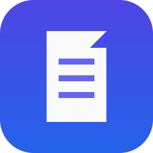

Invoice Track
Descarga las facturas electrónicas de tu Gmail y organízalas en tu computador, sin subirlas a ningún servidor.
Qué hace
Invoice Track es una aplicación de escritorio para Windows, macOS y Linux. Busca en la cuenta de Gmail que tú autorices los correos que traen una factura electrónica (un archivo PDF y uno XML), descarga esos adjuntos y los guarda en una carpeta de tu computador, ordenados por cliente, año, mes y día.
- Clasifica cada comprobante como compra o venta leyendo el contenido del XML y comparando la cédula de cada cliente.
- Marca en Gmail los correos ya procesados con la etiqueta Procesado, para no repetirlos.
- Exporta copias de los XML originales a una carpeta, lista para usarlos en otro sistema.
- Muestra el avance real, permite cancelar y avisa de todo lo que necesita revisión manual.
Autoriza una vez
Cada cuenta de Gmail se conecta con el inicio de sesión de Google. Tu contraseña nunca pasa por Invoice Track.
Sincroniza
Elige el cliente y, si quieres, un rango de fechas. La aplicación descarga y clasifica las facturas.
Encuéntralas ordenadas
Las facturas quedan en la carpeta que elegiste, con sus nombres originales y sin sobrescribir nada.
Tus datos se quedan en tu equipo
Invoice Track procesa todo localmente. No envía tus correos, adjuntos ni credenciales a ningún servidor del desarrollador ni a terceros, y no incluye analítica ni publicidad. La aplicación solo se comunica con los servicios de Google para iniciar sesión y leer Gmail.
Permiso de Gmail que solicita
https://www.googleapis.com/auth/gmail.modify (ver y modificar, pero no eliminar, correos). Se necesita para:
- leer los correos y descargar sus adjuntos PDF y XML, y
- crear y aplicar la etiqueta Procesado.
Invoice Track nunca borra ni envía correos. Puedes revocar el acceso en cualquier momento desde tu cuenta de Google.
Más detalles en la política de privacidad.
Para quién es
Para profesionales y pequeñas empresas que reciben sus facturas electrónicas por correo y quieren archivarlas de forma ordenada, por ejemplo un contador que gestiona las facturas de varios clientes con el consentimiento de cada titular de la cuenta.
English summary
Invoice Track is a desktop app for Windows, macOS and Linux. With your authorization it finds the emails in your Gmail account that carry an electronic invoice (a PDF and an XML file), downloads those attachments, and saves them on your computer organized by client, year, month and day. It also labels processed emails in Gmail as Procesado.
Everything is processed locally on your computer. Invoice Track does not send your emails, attachments or credentials to the developer or to any third party, and it contains no analytics or advertising. It requests the Gmail permission gmail.modify only to read emails, download their attachments and apply a label; it never deletes or sends email.
Read the Privacy Policy or write to nocalde28@gmail.com.
Invoice Track's use and transfer of information received from Google APIs adheres to the Google API Services User Data Policy, including the Limited Use requirements.